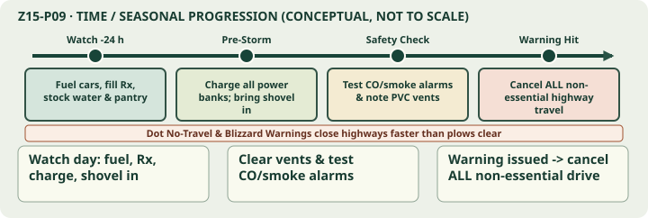

Z15-P09 · Disaster scenarios · New manuscript
Stage household supplies and vehicles before Blizzard and Ice Storm Warnings hit
Complete all fuel, food, prescription, battery, and shelter preparations 12 to 24 hours before severe winter storms immobilize roads.
When it applies · Approaching Winter Storm Warnings, Blizzard Warnings, and Ice Storm Warnings across northern regions.
Equipment · Vehicle fuel tank ≥half/full, stocked pantry/water, charged power banks, snow shovel indoors, and NOAA Weather Radio.

Actions
- Complete errands EARLY on Winter Storm Watch days: top off vehicle fuel tanks, fill critical prescription refills, stage stored drinking water and no-cook pantry foods, fully charge all phones/power banks/medical batteries, and bring a snow shovel and ice-melt/sand inside near the door.[D10, U01, U10]
- Clear gutters/downspouts before freezing-rain ice storms, check exterior furnace/dryer vent locations, test smoke and CO alarms, and confirm family warming-center backup options before whiteouts begin.[D10, U12, U17]
- Cancel non-essential travel completely once a Blizzard Warning or Ice Storm Warning takes effect—highway closures and multi-vehicle pileups trap drivers far faster than plows can clear drifts.[D10]
Failure recognition · Driving to the grocery store after freezing rain begins coating overhead tree limbs and roadways, sliding into a ditch as power lines snap.[D10]
Verify · Confirm vehicle fueled, meds/water/batteries topped off, alarms tested, and non-essential trips cancelled pre-onset.[D10, U12]
Stop or change course · Active Blizzard Warnings, freezing-rain glaze, or state DOT "No Travel Advised" orders halt road departure immediately.[D10]
Evidence and editorial notes
- D10 · FEMA / Ready.gov · Winter Weather (current web edition)
- Section: Blizzards, Ice Storms, and Multi-Day Freezing Blackouts · Conditions: Blizzard Warnings, Ice Storm Warnings, and extreme wind-chill emergencies
Support: Complete supply, fuel, and medication staging before storm onset, stay off snow/ice-closed roads, prepare safe non-combustion warmth consolidation indoors, keep vents/exits clear of snowdrifts, and evacuate to community warming shelters early if indoor heat fails.
Limitations: Ice storms down overhead power lines and trees simultaneously, delaying utility restoration for days across wide areas. · Conflicting evidence: None; connects Z15 winter disaster response with Z12/Z13.
Editorial note: Grounds winter-storm travel halts and warming-center transitions. · Specialist reviewer: Cold-weather emergency management
Primary source · checked 2026-11-24 - U01 · FEMA / Ready.gov · Power Outages (current web edition)
- Section: Power Outages > Preparing and Responding Safely · Conditions: Residential utility electrical outages of hours to days
Support: Keep phones/medical batteries charged, maintain flashlights instead of candles, unplug sensitive appliances to protect against restoration surges, and verify backup power plans for electrically dependent medical devices.
Limitations: Home outage durations vary widely by grid damage; extended winter outages require heat/evacuation contingencies. · Conflicting evidence: None; aligns with CPSC and NFPA.
Editorial note: Establishes household outage baseline and medical-power priority in Z13. · Specialist reviewer: Emergency management and electrical safety
Primary source · checked 2026-11-24 - U10 · FEMA / Ready.gov · Winter Weather (current web edition)
- Section: Winter Household Resilience > Frozen Pipes, Ice Dams, and Heating Loss · Conditions: Sub-zero Upper Midwest winter outages and prolonged cold snaps
Support: Prevent burst pipes by insulating exposed lines, keeping cabinet doors open, shutting off and draining water lines per plumbing guidance if indoor temperatures drop toward freezing, and consolidating household occupants into one safe insulated interior room.
Limitations: Draining hydronic boilers or gas water heaters requires exact manufacturer/plumber steps to prevent equipment damage or gas leaks. · Conflicting evidence: None; regionalizes winter home defense for Minnesota conditions.
Editorial note: Anchors winter pipe protection, thermal-zone consolidation, and abandonment thresholds. · Specialist reviewer: Residential plumbing, HVAC, and cold-weather emergency management
Primary source · checked 2026-11-24 - U12 · CPSC · CO Alarms (current web edition)
- Section: Home Alarms > Smoke, Carbon Monoxide, and Battery Backup Readiness · Conditions: Occupied residences with fuel-burning furnaces, water heaters, attached garages, or outage generators
Support: Maintain interconnected or battery-backed CO and smoke alarms on every floor and outside sleeping rooms, replace expired sensors on schedule, and keep exterior furnace/dryer/exhaust vents clear of drifting snow.
Limitations: Blocked high-efficiency PVC furnace intake/exhaust pipes in heavy snow can force CO back indoors or lock out heating systems. · Conflicting evidence: None; integrates with C09 and Z13-R03.
Editorial note: Connects winter snow-drift vent inspection to household CO prevention. · Specialist reviewer: Carbon monoxide safety and residential HVAC
Primary source · checked 2026-11-24 - U17 · FEMA / Ready.gov · Evacuation (current web edition)
- Section: Household Evacuation Thresholds When Utilities Fail · Conditions: Uninhabitable indoor temperatures, sewage backup, persistent CO alarm, or structural/utility hazard
Support: Establish clear pre-agreed exit triggers to relocate to a warming center, hotel, or relatives BEFORE indoor freezing, carbon monoxide alarms, medical-device battery exhaustion, or impassable blizzard roads trap occupants.
Limitations: Waiting until indoor pipes burst or batteries hit zero removes safe travel options. · Conflicting evidence: None; aligns with T13 and E14.
Editorial note: Defines objective household abandonment thresholds in Z13. · Specialist reviewer: Emergency management and cold-weather operations
Primary source · checked 2026-11-24
Source lineage · FEMA Winter Weather and NWS Winter Safety; new manuscript · Classification · New manuscript.